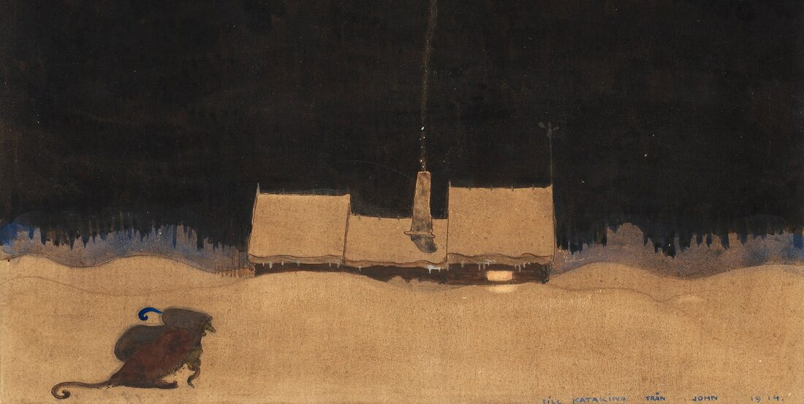
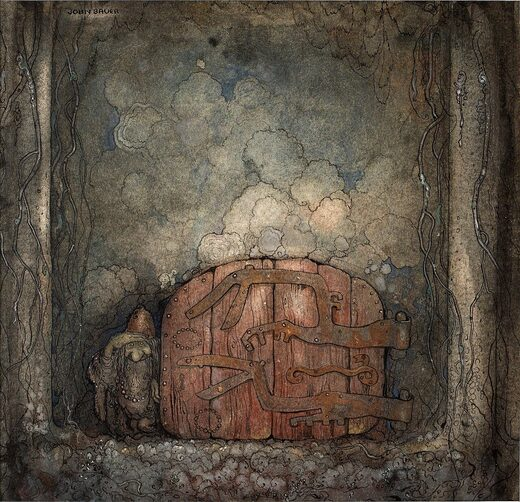

Family movie night
Movie Night in the Shire
Movies and shows from my server, just for family.
✦
Invite only. Ask me for an invite first. Tailscale has to be ON or nothing works. If the connection check page turns green, you're good.
Welcome to the Shire
Movie night at home — the lights are on in the hill.


How to Set It Up
8 quick steps. Check them off as you go.
0 of 8
-
-
-

http://server.tail2a39ff.ts.net:8096
Not working? Open Tailscale, look at the number under server, and type http://THAT-NUMBER:8096 instead.
-
-
-
http://server.tail2a39ff.ts.net:8096
Not working? Open Tailscale, look at the number under server, and type http://THAT-NUMBER:8096 instead.